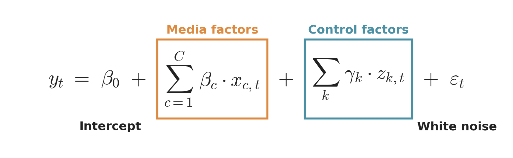
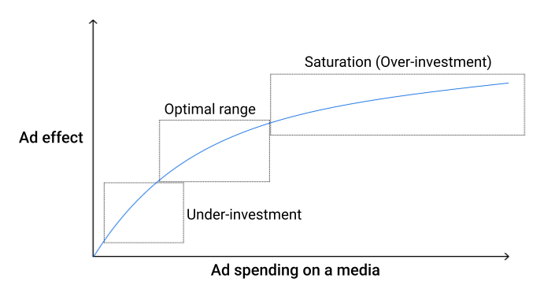
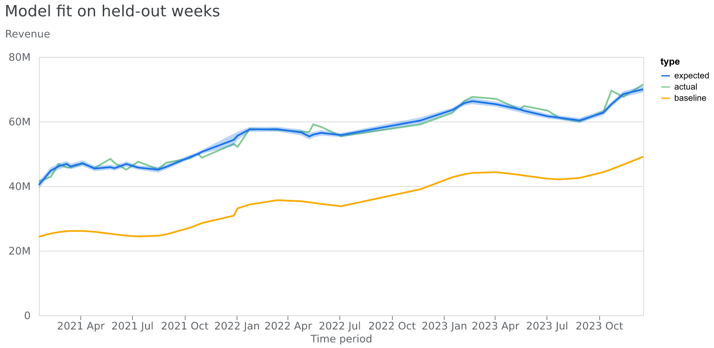
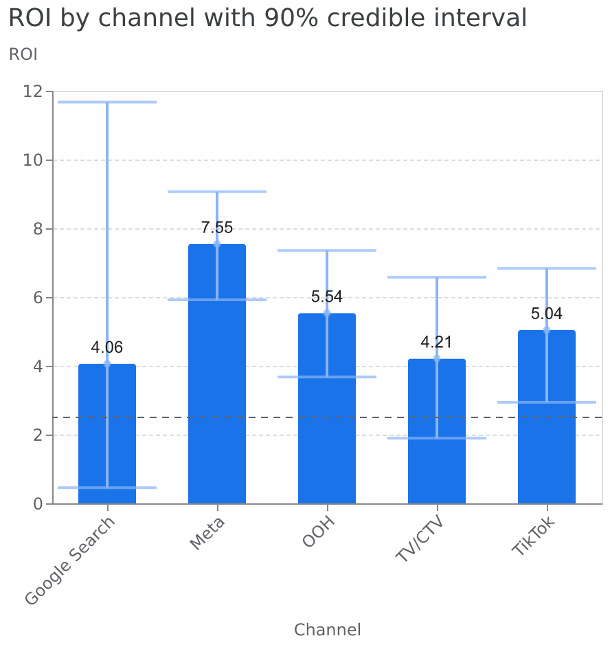

6.2 Ein MMM aufbauen und optimieren
Über die deutsche Ausgabe
Diese Seite ist eine KI-Übersetzung der englischen Ausgabe von Marketing Science in Python. Die englische Ausgabe ist maßgeblich und hat bei Abweichungen Vorrang. Code, Notebooks und Text in Abbildungen bleiben auf Englisch. Englische Ausgabe lesen
Was ist Marketing-Mix-Modeling?
Marketing-Mix-Modeling (MMM) ist ein statistischer Ansatz, der aggregierte Zeitreihendaten (typischerweise wöchentlicher Umsatz und Medienausgaben je Kanal) verwendet, um zu schätzen, wie viel jeder Marketingkanal zu den Geschäftsergebnissen beiträgt. Anders als die Attribution auf Nutzerebene arbeitet MMM mit aggregierten Daten und benötigt kein individuelles Tracking, was es widerstandsfähig gegenüber dem Wegfall von Cookies, App Tracking Transparency und den Beschränkungen der Walled Gardens macht.
MMM dient drei Zwecken:
| Zweck | Geschäftsfrage | |
|---|---|---|
| 1 | Effizienz messen | Wie effizient waren unsere TV-Ausgaben im letzten Jahr? |
| 2 | Szenarien simulieren | Wie würde sich der Umsatz ändern, wenn wir nächstes Jahr mehr oder weniger für TV ausgeben? |
| 3 | Werbebudget optimieren | Wie verteile ich das Budget, um den Umsatz zu maximieren? |
Weil Tracking auf Nutzerebene weniger zuverlässig geworden ist, stößt MMM wieder auf Interesse. Modelle mit aggregierten Daten sind heute der praktikabelste Weg, die Werbewirkung kanalübergreifend zu messen.
Die MMM-Gleichung
In seiner einfachsten Form ist MMM eine Regression des wöchentlichen Umsatzes auf die Medienausgaben, kontrolliert um Feiertage, Promotions und andere Nicht-Medien-Treiber:

wobei \(y_t\) der Umsatz zum Zeitpunkt \(t\) ist, \(x_{c,t}\) die Ausgaben in Kanal \(c\), \(z_{k,t}\) die Kontrollvariablen und \(\varepsilon_t\) das Rauschen.
Diese einfache Regression reicht aus zwei Gründen nicht aus. Erstens sind Medieneffekte nicht unmittelbar: Ein TV-Spot in dieser Woche kann die Käufe in den folgenden Wochen noch beeinflussen (Carryover). Zweitens sind Medieneffekte nicht linear: Der hundertste GRP (Gross Rating Point, ein Standardmaß für die erreichte TV-Reichweite) in einer Woche bringt weniger als der erste (abnehmende Grenzerträge).
Ein realistischeres Modell wendet vor der Linearkombination Adstock- (Carryover) und Sättigungstransformationen (abnehmende Grenzerträge) an:

Sättigung (abnehmende Grenzerträge)
Jeder Medienkanal sättigt irgendwann: Je mehr Sie in einem Kanal ausgeben, desto weniger bringt jeder zusätzliche Dollar ein. Die erste Million Dollar an TV-Ausgaben treibt erheblichen inkrementellen Umsatz; die zehnte Million treibt weit weniger. Abbildung 3 zeigt die drei Bereiche, die dadurch entstehen: eine Unterinvestitionszone, in der jeder Dollar noch hart arbeitet, einen optimalen Bereich und eine Sättigungszone, in der zusätzliche Ausgaben weitgehend verschwendet sind.

Die Hill-Funktion ist die gängigste Art, das zu modellieren:
\[ \text{Hill}(x) = \frac{x^S}{x^S + K^S} \]
wobei \(K\) (der Halbsättigungspunkt, oft EC50 genannt) das Ausgabenniveau ist, bei dem der Kanal 50% seines maximalen Effekts erreicht, und \(S\) (die Steigung) steuert, wie scharf die Kurve abknickt.
Diese Krümmung ist es, die eine Budgetumschichtung wertvoll macht. In Abbildung 4 sitzt Kanal X tief in seiner Sättigungszone, während Kanal Y noch Spielraum hat. Das Budget von X zu kürzen kostet $1M an Umsatz, während dasselbe Budget bei Y $3M einbringt: ein Nettogewinn von $2M bei gleichen Gesamtausgaben. Budget von gesättigten Kanälen zu unterinvestierten zu verschieben kann den Gesamtertrag erhöhen, selbst wenn der durchschnittliche ROAS des gesättigten Kanals höher aussieht. Der durchschnittliche ROAS teilt den gesamten inkrementellen Umsatz eines Kanals durch seine Gesamtausgaben; der marginale ROAS ist die Steigung der Kurve an der Stelle, an der der Kanal gerade steht, und das ist es, was der nächste Dollar einbringt.

Adstock (Nachwirkung)
Werbung hört nicht in dem Moment auf zu wirken, in dem sie nicht mehr ausgestrahlt wird. Adstock erfasst diesen verzögerten Effekt. Die einfachste Form ist der geometrische Zerfall (Meridian verwendet dieselben Gewichte, geteilt durch ihre Summe):
\[ \text{Adstock}_t = x_t + \lambda \cdot \text{Adstock}_{t-1} \]
wobei \(\lambda \in [0, 1]\) die Abklingfaktor ist. Ein höheres \(\lambda\) bedeutet eine längere Nachwirkung. Abbildung 5 und Abbildung 6 zeigen dieselben drei Werbephasen unter zwei Abklingfaktorn. Bei einer hohen Rate, typisch für Upper-Funnel-Kanäle wie TV, hält der Effekt jedes Flights noch lange nach der Ausstrahlung an, und überlappende Flights stapeln sich übereinander. Bei einer niedrigeren Rate, typisch für digitale Kanäle, verblasst der Effekt innerhalb von Tagen.


Die Abklingfaktor lässt sich leichter als Halbwertszeit verstehen, die Anzahl der Perioden, bis der Effekt auf die Hälfte gefallen ist, \(\ln(0.5) / \ln(\lambda)\). Bei wöchentlicher Granularität werden Upper-Funnel-Kanäle wie TV üblicherweise mit Halbwertszeiten von mehreren Wochen modelliert, während Lower-Funnel-Kanäle wie Paid Search innerhalb von etwa einer Woche abklingen. Die Begleit-Demo modelliert jeden Kanal mit geometrischem Adstock über ein Fenster von 12 Wochen und zentriert die Zerfalls-Priors nach Funnel-Stufe: 6 Wochen für TV/CTV und OOH (\(\lambda \approx 0.89\)), 3 Wochen für Meta und TikTok (\(\lambda \approx 0.79\)) und 1 Woche für Google Search (\(\lambda = 0.5\)). Betrachten Sie diese Werte als Ausgangs-Priors, die von den Daten bewegt werden sollen, nicht als Fakten: Die veröffentlichten Empfehlungen variieren, und die richtigen Werte hängen von Ihrer Kategorie und Ihrer Datengranularität ab. Eine „wöchentliche“ Abklingfaktor, auf Tagesdaten angewendet, impliziert eine ganz andere Halbwertszeit.
Es gibt flexiblere Alternativen. Der Weibull-Adstock erlaubt eine nicht-monotone Zerfallsform: Der Effekt kann einige Tage nach dem Kontakt seinen Höhepunkt erreichen, bevor er abklingt, was Kanäle wie E-Mail oder Direktmailing besser abbildet, bei denen es eine natürliche Verarbeitungsverzögerung gibt.
Datenanforderungen
Ein MMM braucht wöchentliche Werte für die Zielvariable, die Werbeausgaben und die Kontrollvariablen (Tabelle 2).
| Variablentyp | Kategorie | Variablen | Priorität |
|---|---|---|---|
| Zielvariable | KPI | Umsatz | Erforderlich |
| Erklärende Variable | Medien | Werbeausgaben je Kanal | Erforderlich |
| Erklärende Variable | Sonstiges | Kennzahlen außerhalb der Werbung (Preis, Aktionen, Vertrieb) | Optional |
| Erklärende Variable | Sonstiges | Saisonalität, Feiertage, Wetter, Konjunktur | Optional |
Empfohlene Granularität:
- Zeit: Wöchentlich. Tagesdaten sind verrauschter; Monatsdaten haben zu wenige Beobachtungen.
- Historie: Mindestens 2–3 Jahre an Daten (etwa 104 bis 156 Wochen). Mit weniger Historie wird es schwierig, Medieneffekte von der Saisonalität zu trennen.
- Geografie: National oder auf Markenebene ist üblich. Subnationale Modelle (auf Geo-Ebene) können leistungsfähiger sein, brauchen aber mehr Daten und sorgfältige Modellierung.
- Kanäle: Nehmen Sie nur Kanäle auf, deren Ausgaben tatsächlich variieren. Wenn ein Kanal jede Woche denselben Betrag ausgibt, kann das Modell seinen Effekt nicht lernen.
Eine Prüfung wird leicht übersehen. Adstock und Sättigung glätten den Beitrag eines Kanals. Dadurch kann die Werbung weniger von den wöchentlichen Umsatzschwankungen erklären als das verbleibende Rauschen. Dann kann das Modell den Werbebeitrag nicht vom Grundumsatz trennen. Auch ein Prior löst das nicht. Das Begleitnotebook prüft dies vor der Schätzung in Schritt 2b.
Ein weiterer Grund für die Kontrollvariablen: Werbeausgaben und Umsatz folgen oft schon aufgrund ihrer zeitlichen Struktur demselben Trend und denselben saisonalen Mustern. Allein dieser gemeinsame Kalender kann zwei ansonsten unabhängige Zeitreihen stark korrelieren lassen. Kontrollvariablen für Trend und Saisonalität verhindern, dass diese gemeinsame Struktur in die geschätzten Werbekoeffizienten eingeht.
Die Beispieldaten sind so aufgebaut: eine Zeile je Woche mit Umsatz, Ausgaben für fünf Kanäle und Kontrollvariablen. Tabelle 3 zeigt die ersten fünf Wochen.
| Woche | Umsatz ($M) | TV/CTV ($k) | OOH ($k) | Google Search ($k) | Meta ($k) | TikTok ($k) | Saisonalität | Weihnachten |
|---|---|---|---|---|---|---|---|---|
| 2020-12-28 | 21.4 | 382 | 0 | 740 | 948 | 402 | -0.039 | 1 |
| 2021-01-04 | 37.3 | 836 | 0 | 768 | 1,778 | 882 | 0.069 | 0 |
| 2021-01-11 | 38.9 | 848 | 0 | 776 | 1,612 | 772 | 0.188 | 0 |
| 2021-01-18 | 41.5 | 784 | 0 | 776 | 1,619 | 851 | 0.305 | 0 |
| 2021-01-25 | 41.5 | 742 | 0 | 777 | 1,683 | 755 | 0.417 | 0 |
Der bayesianische Blickwinkel
Moderne MMMs sind überwiegend bayesianisch. Dafür gibt es drei praktische Gründe.
- Priors bilden Fachwissen ab. Ergibt sich aus früheren Experimenten ein TV-ROAS von rund 2,0, können Sie dieses Wissen in den Prior aufnehmen. Das Modell aktualisiert ihn anhand der Daten. Ohne Priors kann allein die Multikollinearität zu unplausiblen Schätzungen führen.
- Kredibilitätsintervalle statt Punktschätzungen. Aus „TV-ROAS = 2,3“ wird „TV-ROAS: Median 2,3, 90-%-Kredibilitätsintervall [1,1; 3,8]“.
- Experimente lassen sich direkt einbinden. Wenn ein Geo-Experiment den inkrementellen Effekt eines Kanals schätzt, können Sie das Ergebnis als informativen Prior in das MMM aufnehmen. Das verengt die Posterior-Verteilung und verbessert die Identifizierbarkeit. Abschnitt 6.4 zeigt den Ablauf.
Deshalb verwenden Werkzeuge wie Meridian und PyMC-Marketing unter der Haube bayesianische Inferenz.
Eine Bibliothek wählen
Mehrere Open-Source-Bibliotheken setzen die Methoden dieses Kapitels um. Die drei meistgenutzten im Jahr 2026 sind:
| Bibliothek | Funktionen | GitHub |
|---|---|---|
| Meridian | Python-basiertes bayesianisches MMM von Google. Starke Unterstützung für Daten auf Geo-Ebene und Kalibrierung mit Experimenten. Nachfolger des inzwischen eingestellten LightweightMMM. | google/meridian |
| PyMC-Marketing | Python-basiertes Toolkit für bayesianische Marketingmodellierung. Deckt MMM, CLV und Kundenwahlmodelle ab. Flexibel, erfordert aber mehr Modellierungsurteil. | pymc-labs/pymc-marketing |
| Robyn | R-basierte MMM-Bibliothek von Meta. Verwendet Ridge-Regression und Prophet. Gut für schnelle Basismodelle. | facebookexperimental/Robyn |
Alle drei bilden Nachwirkung und Sättigung ab und unterstützen die Budgetverteilung. Sie unterscheiden sich darin, wie sie Parameter schätzen und Unsicherheit erfassen. Dieses Kapitel nutzt Meridian, weil es in Python verfügbar ist, sich mit Experimenten kalibrieren lässt und Berichte zu Modellanpassung und Budgetszenarien erstellt.
Ein Praxisdurchlauf mit Meridian
Begleit-Notebook: sec6.2_6.4_mmm_meridian.ipynb demonstriert einen vollständigen MMM-Workflow mit Googles Meridian-Bibliothek.
Auf GitHub ansehen
Daten laden und vorbereiten
Das Beispiel enthält 157 Wochen Umsatzdaten für fünf Medienkanäle (TV/CTV, OOH, Google Search, Meta, TikTok) sowie Kontrollvariablen für Feiertage und Saisonalität. Meridian erstellt mit DataFrameInputDataBuilder die Eingabedaten aus einem pandas DataFrame. Die Skalierung übernimmt die Bibliothek. Sie modelliert die Sättigung für media_cols (Werbekontakte wie Impressionen oder Klicks). Die Kostengrundlage des ROAS stammt aus media_spend_cols.
from meridian.data import data_frame_input_data_builder
# df: one row per week. The *_cols names are lists of its columns.
builder = data_frame_input_data_builder.DataFrameInputDataBuilder(
kpi_type="revenue", default_kpi_column="sales"
)
data = (
builder.with_kpi(df)
.with_media(
df,
media_channels=["TV/CTV", "OOH", "Google Search", "Meta", "TikTok"],
media_cols=media_cols, # exposure: saturation applies here
media_spend_cols=media_spend_cols, # dollars: the cost basis for ROAS
)
.with_controls(df, control_cols=control_cols)
.build()
)Priors für Sättigung und Adstock
Meridian gibt den Halbsättigungspunkt \(K\) in eigenen Einheiten an. Es skaliert die Medienwerte am Median und normiert die Adstock-Gewichte auf die Summe 1. Ein durchgehend aktiver Kanal liegt so ungefähr bei 1. Für die Sättigung nutzt das Beispiel einen gemeinsamen breiten Prior, der sanft gekrümmte Kurven bevorzugt. Nur die Adstock-Priors unterscheiden sich zwischen den Kanälen. Sie sind nach Funnel-Stufe zentriert: eine Halbwertszeit von sechs Wochen für TV/CTV und OOH, eine Woche für Search und drei Wochen für Meta und TikTok.
Die Spezifikation besteht aus einem Prior-Objekt und einer ModelSpec.
import tensorflow_probability as tfp
from meridian import constants
from meridian.model import prior_distribution, spec
tfd = tfp.distributions
prior = prior_distribution.PriorDistribution(
# ROAS: one weak prior for every channel
roi_m=tfd.LogNormal(0.2, 0.9, name=constants.ROI_M),
# Adstock centers: TV/CTV, OOH, Google Search, Meta, TikTok
alpha_m=tfd.TruncatedNormal(
[0.89, 0.89, 0.50, 0.79, 0.79], 0.1, 0.0, 1.0, name=constants.ALPHA_M
),
# Saturation: one wide prior that favors a gentle bend
ec_m=tfd.TruncatedNormal(5.0, 2.0, 0.1, 30.0, name=constants.EC_M),
)
model_spec = spec.ModelSpec(
prior=prior, media_prior_type="roi", max_lag=12,
holdout_id=holdout_id, # a random 25% of weeks, kept to check the fit
)Das Modell trainieren
Meridian verwendet für MCMC den No-U-Turn Sampler (NUTS). Zunächst ziehen wir Stichproben aus dem Prior, um die Plausibilität zu prüfen. Danach ziehen wir Stichproben aus der Posterior-Verteilung.
from meridian.model import model
mmm = model.Meridian(input_data=data, model_spec=model_spec)
mmm.sample_prior(500)
mmm.sample_posterior(n_chains=4, n_adapt=500, n_burnin=500, n_keep=1000)
# Production runs typically use n_chains=10, n_keep=2000 (≈ 5× compute).Diagnostik
Meridians ModelReviewer prüft automatisch Konvergenz, Grundumsatz, Anpassungsgüte und die Veränderung vom Prior zum Posterior. Er meldet, ob eine Prüfung bestanden wurde, eine Nachprüfung braucht oder fehlgeschlagen ist. Tabelle 5 fasst die Schätzungen je Kanal zusammen. Die letzte Spalte teilt die halbe Breite des Intervalls für den marginalen ROAS durch den Schätzwert. Diese Kennzahl begrenzt die Budgetempfehlungen.
| Kanal | Ausgabenanteil | Durchschnittlicher ROAS [90-%-Kredibilitätsintervall] | Marginaler ROAS [90-%-Kredibilitätsintervall] | Relative Halbbreite |
|---|---|---|---|---|
| TV/CTV | 18% | 4.21 [1.90, 6.58] | 3.18 [1.53, 4.86] | 0.52 |
| OOH | 20% | 5.54 [3.67, 7.36] | 4.34 [2.94, 5.70] | 0.32 |
| Google Search | 21% | 4.06 [0.46, 11.67] | 3.29 [0.36, 9.51] | 1.39 |
| Meta | 19% | 7.55 [5.92, 9.06] | 6.08 [4.72, 7.33] | 0.21 |
| TikTok | 22% | 5.04 [2.94, 6.83] | 3.84 [2.21, 5.27] | 0.40 |
Bei vier Kanälen lassen die Intervalle eine Planung zu. Bei Google Search reicht der marginale ROAS von 0,36 bis 9,51. Um diese Zeile geht es im weiteren Kapitel.
Modellgüte
Wir halten zufällig 25 % der Wochen zurück. Im Beispiel liegt das R² sowohl in den Trainingsdaten als auch außerhalb davon bei etwa 0,97. Bei synthetischen Daten und zufälliger Auswahl ist dieser geringe Abstand erwartbar. Die Prüfung misst Interpolation und findet unter günstigen Bedingungen statt. Bei realen Daten mit Rauschen, Trendbrüchen und unregelmäßigen Aktionen ist ein R² außerhalb der Trainingsdaten zwischen 0,6 und 0,7 üblich und akzeptabel. Ein hohes R² bestätigt die Schätzungen zur Werbewirkung nicht. Prüfen Sie Richtung und Größe der Effekte separat.
Warum ein zufälliges Holdout, wenn Abschnitt 5.3 zufällige Aufteilungen rundweg ablehnt? Eine Prognose muss über ihr Trainingsfenster hinaus extrapolieren, also wird sie von einem festen Ursprung aus nach vorn bewertet. Ein MMM verteilt den Beitrag zum Umsatz innerhalb einer Periode, die es beobachtet hat, also stellt ein verstreutes Holdout die nützliche Frage: ob die angepasste Struktur auf Wochen hält, die die Likelihood nie gesehen hat. Lesen Sie die Zahl als Interpolationsdiagnostik, nicht als Beleg dafür, dass das Modell das nächste Quartal vorhersagen kann.

Blau zeigt die Modellschätzung, Grün den beobachteten Umsatz und Orange den geschätzten Grundumsatz ohne Werbung. Das blaue Band ist das 90-%-Kredibilitätsintervall.

Die zweite Grafik verwendet dieselbe Meridian-Ausgabe und zeigt nur die zurückgehaltenen Wochen. Die enge Anpassung spricht für die Interpolation innerhalb dieses Zeitraums. Die Intervalle je Kanal zeigen, wie präzise das Modell die Werbewirkung schätzt.
Ergebnisse je Kanal
Das Modell schätzt den ROAS jedes Kanals mit einem Kredibilitätsintervall.

Meridian nennt das Verhältnis von Umsatz zu Ausgaben ROI. In diesem Kapitel heißt es ROAS. Die gestrichelte Linie zeigt die Rentabilitätsschwelle von 2,50 bei einer Deckungsbeitragsmarge von 40 %. Das Intervall für Search reicht über beide Seiten der Schwelle.

Der Grundumsatz ist Meridians Schätzung des Umsatzes ohne Werbung. Die farbigen Schichten zeigen die geschätzten Kanalbeiträge. Die Umsatzachse beginnt oberhalb von null. Lesen Sie Änderungen an der Achse ab, statt die sichtbaren Flächen zu vergleichen.
Sie müssen diese Diagramme nicht einzeln bauen. Ein einziger Aufruf, summarizer.Summarizer(mmm).output_model_results_summary(...), schreibt einen stakeholdertauglichen zweiseitigen HTML-Bericht, der Modellanpassung, Kanalbeiträge, ROAS mit Kredibilitätsintervallen und Reaktionskurven abdeckt. Sehen Sie sich den an, den das Begleit-Notebook erzeugt hat: summary_output.html.
Budgetallokation
Die drei Zwecke des Modells (messen, simulieren, optimieren) laufen hier zusammen. Sobald die Reaktionskurven angepasst sind, sucht der Optimierer die Allokation, die den vorhergesagten KPI unter einer festen Budgetbeschränkung maximiert:
from meridian.analysis import optimizer
budget_optimizer = optimizer.BudgetOptimizer(mmm)
optimization_results = budget_optimizer.optimize()Das ist dieselbe Sättigungslogik wie in Abbildung 4, jetzt auf den gesamten Medienmix statt auf zwei Kanäle angewendet: Der Optimierer verschiebt Budget zu den Kanälen, in denen der nächste Dollar noch am meisten bewirkt.

Balken unter null zeigen vorgeschlagene Kürzungen, Balken über null vorgeschlagene Erhöhungen. OOH und Meta erhalten das frei werdende Budget von TV/CTV und Search sowie einen kleinen Teil des TikTok-Budgets.

Die Punkte markieren die aktuellen Ausgaben, die Quadrate die vorgeschlagene Verteilung. Nach rechts steigen die Ausgaben, nach links sinken sie. Die Steigung an jedem Punkt zeigt, wie viel zusätzlichen Umsatz der nächste Dollar bringt.
Der Optimierer bringt dieselbe Berichtsbequemlichkeit mit: optimization_results.output_optimization_summary(...) schreibt einen zweiseitigen HTML-Bericht zur empfohlenen Umschichtung (optimization_output.html).
Tabelle 6 zeigt die Empfehlung des Modells. Bei unverändertem Gesamtbudget verschiebt der Optimierer Ausgaben von TV/CTV und Google Search zu OOH und Meta, jeweils bis zur erlaubten Grenze von 30 %. TikTok bleibt nahezu unverändert. Das Modell erwartet rund 3 % mehr werbebedingten Umsatz, etwa 1,2 % des Gesamtumsatzes.
| Aktuelle Ausgaben | Empfohlene Ausgaben | Änderung | Change |
|---|---|---|---|
| OOH | $124.4M | $161.7M | +30.0% |
| Meta | $115.2M | $149.8M | +30.0% |
| TikTok | $136.1M | $135.8M | −0.2% |
| TV/CTV | $111.8M | $78.3M | −30.0% |
| Google Search | $127.1M | $89.0M | −30.0% |
Das Notebook lässt das Budget eines Kanals unverändert, wenn die relative Halbbreite seines Intervalls über 0,8 liegt. Hier betrifft das Search. Führen Sie vor einer Änderung des Search-Budgets einen Inkrementalitätstest durch. Abschnitt 6.3 zeigt den Test. Abschnitt 6.4 übernimmt das Ergebnis ins Modell.
Das Wichtigste in Kürze
- MMM schätzt den Kanalbeitrag aus aggregierten Zeitreihen und übersteht deshalb den Wegfall von Cookies und die Walled Gardens. Es braucht Wochendaten, zwei bis drei Jahre Historie und echte Ausgabenvariation in jedem Kanal.
- Adstock und Sättigung verwandeln Ausgaben in eine Reaktionskurve, und diese Kurve ist der Grund, warum Sie nach dem marginalen statt dem durchschnittlichen Ertrag allokieren. Ein Kanal mit hohem durchschnittlichem ROAS kann bereits gesättigt sein.
- Für einen Kanal, den die Daten nicht identifizieren können, gibt das Modell den Prior zurück, den Sie ihm gegeben haben. Halten Sie Empfehlungen zurück, deren Intervalle zu breit sind, um sie zu verteidigen, halten Sie die Vorhersage des Modells fest und gehen Sie messen.